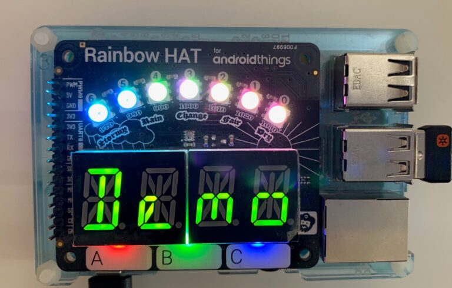

tl;dr
Nachdem ich letztens mein erstes Windows 10 IoT Core Projekt in Version 1.0 abgeschlossen habe, war diesmal nun der etwas kompliziertere Pimoroni Rainbow HAT an der Reihe.
Motivation
Ursprünglich war dieser HAT ein Demo-Kit um mit Android Things experimentieren zu können. Da dieses aber nun mehr oder weniger tot ist habe ich eine weitere Verwendung für das Stück Technik gesucht. Schließlich wurde ich bei einem Windows 10 IoT Port “fündig.
Features des HATs
Der Rainbow HAT für den Raspberry Pi verfügt über folgende Fähigkeiten:

Lessons learned
Zu den Sensoren muss man sagen, dass diese nur einen Trend oder Indiz für die wirklichen Werte liefern können. So ist der Temperatursensor nur wenige Millimeter von der sich aufheizenden Prozessor des Pis entfernt. Somit sind die Messungen (leicht) verfälscht.
Nichtsdestotrotz kann man hierbei super den Umgang mit GPIOs-, I2C- und PWM-Controllern erlernen.
Ein Großteil der Logik basiert auf der originalen Python-Implementierung von Pimoroni.
Quelltext
Die mit vielen Kommentaren versehenen Quelltexte zur App liegen wie immer auf meinem GitHub Profil im Repository dotnet-iot-homebear-rainbow. Als auch als Hackster.io Projekt zu finden.